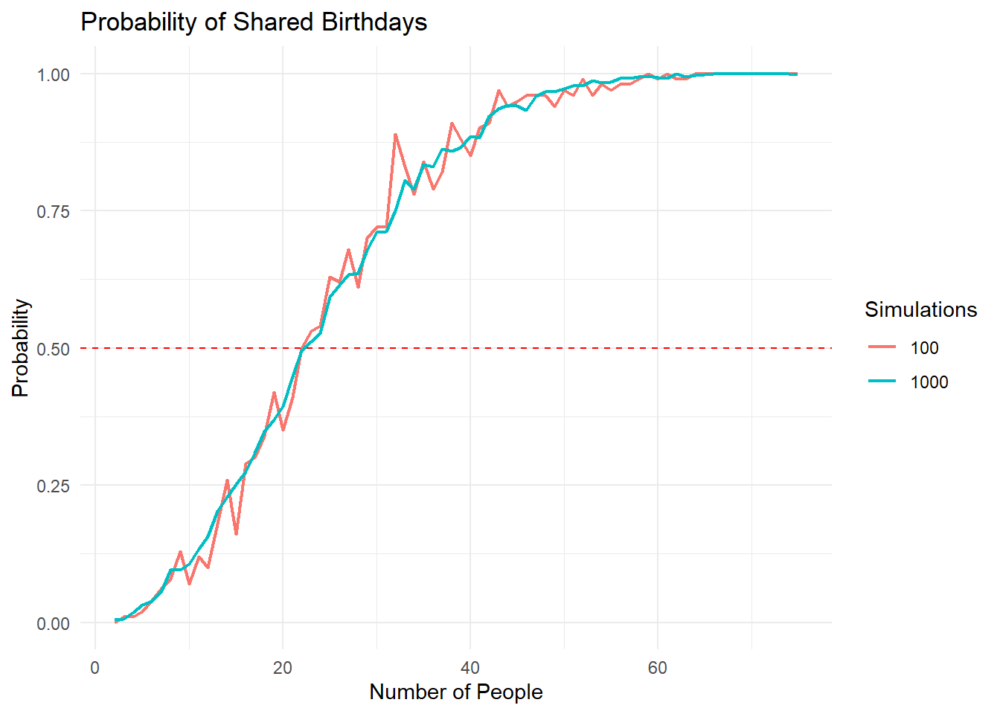

We will begin with using simulations in R. Simulations are important to understanding the statistical properties of your data, so it is important that you familiarize yourself with why we do this and how to do this in R.
Simulation and Probability
Probability helps us understand how frequently an outcome would occur if we observed the random process an infinite number of times. Simulation helps us model this process so we can understand what the “true probability” - which we never know - looks like.
1.1.0.1 Birthday Problem
In a room of 15 people, what is the probability that 2 people will have the same birthday? This is a classic probability problem with numbers that typically surprise people.
We can first calculate the probability using conventional hand calculations and permutations. This gives us the true probability for any 15 random people having the same birthday at ‘0.2529013’.
We can also use simulation to calculate the same probability. Using simulation will then allow us to do other interesting calculations on the birthday problem. With the simulation setup, we use random sampling - 15 people and their random birthdays - from a population 100 times then count the number of times that two or more people have the same birthday.
## Calculating by Hand ##1- ((365*364*363*362*361*360*359*358*357*356*355*354*353*352*351)/(365^15))
[1] 0.2529013
## Calculating with Simulation ##set.seed(1234) #For replicationreps <-100#Number of times we draw a random sample of 15 people people <-15#Number of people to randomly draw for birthday calculationalldays <-1:365#Numeric lists of birthdays sameday <-0#Needed to calculate matching birthday or not for (i in1:reps) { #For loop that samples birthdays with replacement room <-sample(alldays, people, replace =TRUE) if (length(unique(room)) < people){ sameday <- sameday+1 }} print(sameday/reps)
[1] 0.26
From both methods, we get a probability of roughly 25% that two people in any room of 15 random people will have the same birthday. We can use simulation to easily advance our understanding of the birthday problem. Suppose we want to know at what number of people the probability that two people will have the same birthday equals 50%? We can manually plug and play different values but that isn’t necessary. We can add additional conditions to our simulation to identify at what number the probability of 2 people having the same birthday is 50%.
To do this, we will change our code slightly. To simplify the process, we first write a function that calculates the probability based on the previous code. This code is identical to the previous example except we are now saving it as a function so that we can easily change the number of people in our birthday analysis.
num_simulations <-100# Number of simulations i.e. times we will draw random samples of people to test for matching birthdays sameday <-0# We use this to count if 2 people have same birthday in the simulationcalculate_birthday_prob <-function(num_people) {for (i in1:num_simulations) { birthdays <-sample(1:365, num_people, replace =TRUE) # Generate random birthdaysif (length(birthdays) !=length(unique(birthdays))) { # Check for shared birthdays sameday <- sameday +1 } } probability <- sameday / num_simulations # Calculate the probabilityreturn(probability)}# Now, we create a vector of people in the group using the 'num_people' line of code. num_people <-2:100#Here we are saying to use 2, 3, 4, 5, ...., 100 people in the calculation of matching birthdays probabilities <-sapply(num_people, calculate_birthday_prob) #This code applies the above numbers to the birthday problem function and saves it as a vectordata <-data.frame(num_people = num_people, probabilities = probabilities) # Changes the vector to a data frame for easier graphing
Let’s plot these data so we can see our birthday simulation visually:
# Plot the results using ggplotggplot(data, aes(x = num_people, y = probabilities)) +geom_line() +geom_hline(yintercept =0.5, linetype ="dashed", color ="red") +labs(x ="Number of People", y ="Probability") +ggtitle("Probability of Shared Birthdays") +theme_minimal()
With this simulation done, we can see that with roughly 25 people in a group there is a 50% chance that 2 people will have the exact same birthday. At around 60 people in a group the probability that 2 people will have the same birthday is virtually 100%.
You might be wondering why the line is so jagged. If so, that is the correct intuition. It occurs because we only randomly sampled 100 cases each time. As the number of cases sampled increases, the estimates will become more precise making the line smoother.
Let’s illustrate this by raising the number of cases sampled from 100 to 1,000 and then rerun the analysis.
num_simulations <-1000# Number of simulations i.e. times we will draw random samples of people to test for matching birthdays num_success <-0# We use this to count if 2 people have same birthday in the simulationcalculate_birthday_prob <-function(num_people) {for (i in1:num_simulations) { birthdays <-sample(1:365, num_people, replace =TRUE) # Generate random birthdaysif (length(birthdays) !=length(unique(birthdays))) { # Check for shared birthdays num_success <- num_success +1 } } probability <- num_success / num_simulations # Calculate the probabilityreturn(probability)}# Now, we create a vector of people in the group using the 'num_people' line of code. num_people <-2:100#Here we are saying to use 2, 3, 4, 5, ...., 100 people in the calculation of matching birthdays probabilities <-sapply(num_people, calculate_birthday_prob) #This code applies the above numbers to the birthday problem function and saves it as a vectordata <-data.frame(num_people = num_people, probabilities = probabilities) # Changes the vector to a data frame for easier graphing
Let’s plot the result again, however this time to see our line with more samples included:
# Plot the results using ggplotggplot(data, aes(x = num_people, y = probabilities)) +geom_line() +geom_hline(yintercept =0.5, linetype ="dashed", color ="red") +labs(x ="Number of People", y ="Probability") +ggtitle("Probability of Shared Birthdays") +theme_minimal()
Now, the line is much smoother which is entirely because the number of random cases sampled increased from 100 to 1,000.
If we wanted to, we could do this analysis at the same time with a slightly updated function. We need to add code to randomly draw samples with a different number of cases. Using the code below, we now see both lines plotted next to each other. The line for the sample size of 100 is much more jagged because the confidence interval is larger due to the smaller sample size compared to the line for the sample size of 1,000. By increasing the number of trials in each sample from 100 to 1,000, our estimates become more precise, thus leading to a smoother graph.
calculate_birthday_prob <-function(num_people, num_simulations) {for (i in1:num_simulations) { birthdays <-sample(1:365, num_people, replace =TRUE) # Generate random birthdaysif (length(birthdays) !=length(unique(birthdays))) { # Check for shared birthdays num_success <- num_success +1 } } probability <- num_success / num_simulations # Calculate the probabilityreturn(probability)}# We set the number of people in the group and the number of times to draw random groups. We'll do 100, 1000, and 5000 but the more times you simulate the longer it takes to complete. num_people <-2:75num_simulations <-c(100, 1000)# Create empty data frame to store resultsresults <-data.frame()# Iterate through number of simulationsfor (sim in num_simulations) { probabilities <-sapply(num_people, calculate_birthday_prob, num_simulations = sim)# Append results to data frame results <-rbind(results, data.frame(num_people = num_people, probabilities = probabilities, num_simulations = sim))}# Plot the results using ggplotggplot(results, aes(x = num_people, y = probabilities, color =as.factor(num_simulations))) +theme_bw(base_size =20) +geom_line(linewidth=.75) +geom_hline(yintercept =0.5, linetype ="dashed", color ="red") +labs(x ="Number of People", y ="Probability", color ="Simulations") +ggtitle("Probability of Shared Birthdays") +theme_minimal()

What did we just learn? A few interesting and important things. First, it does not take all that many people in a room before you can be confident that two people have the same birthday. Next, we learned how to use simulation to illustrate important principles of probabilities. Specifically, the more random trials we take and the larger our sample size gets, the more precise our estimates get to the true population value we are estimating. With this in mind, we can better understand our sampling distributions and how that impacts our analyses and results when using survey data.